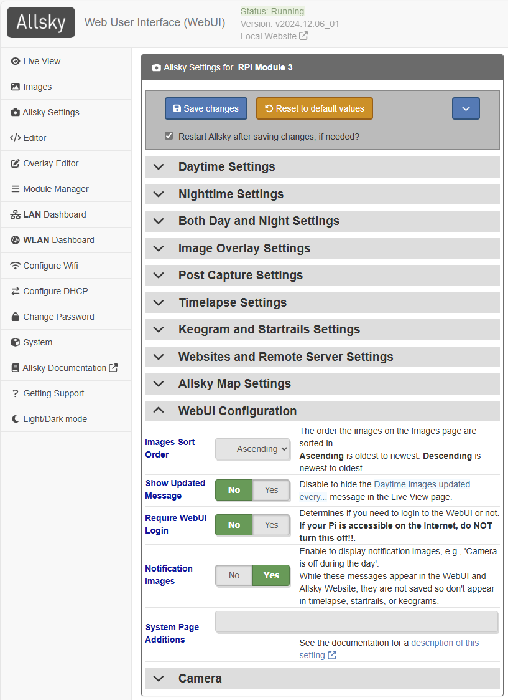

After you install Allsky for the first time there are many settings you must modify via the WebUI's Allsky Settings page. If you are upgrading from a recent prior release those settings can optionally be brought to the new release. Settings that change the look and feel of an Allsky Website are described here.
The list of settings available in the WebUI depends on your camera model; settings specific to a camera type (e.g., RPi or ZWO) are indicated as such in the table below. Where appropriate, the WebUI displays the minimum, maximum, and default values when you hover over a value, and only displays settings the camera supports, like cooler temperature for cooled cameras.
A typical page is below.
- CD indicates the setting's default is Camera Dependent and is displayed in the WebUI by hovering your cursor over the value.
- AW indicates a setting who's value is uploaded to your Allsky Website(s) when changed.
| WebUI Setting | Default | Description |
|---|---|---|
| Daytime Settings | ||
| Daytime Capture | Yes | Enable to capture images during the day. |
| Daytime Save AW | No | Enable to save images during the day (they are always saved at night). Only applies if Daytime Capture is enabled. |
| Auto-Exposure | Yes | Turns on/off Auto-Exposure, which delivers properly exposed images even if the overall brightness of the sky changes due to cloud cover, sun, etc. |
| Max Auto-Exposure | CD | The maximum exposure in milliseconds when
Auto-Exposure is enabled.
Ignored if Auto-Exposure is disabled.
When Auto-Exposure and Consistent Delays Between Images are both on, the time between the start of one image and the start of the next images is the Max Auto-Exposure + Delay. |
| Manual Exposure | 0.5 | Manual exposure time in milliseconds.
If Auto-Exposure
is on this value is used as a starting exposure.
The time between the start of one image and the start of the next images will be the Manual Exposure + Delay, regardless of the status of Consistent Delays Between Images. |
| Mean Target | 0.5 | The target mean brightness level when Auto-Exposure is on. Ranges from 0.0 (pure black) to 1.0 (pure white). Best used when both Auto-Exposure and Auto-Gain are enabled. |
| Mean Threshold | 0.1 | When using Mean Target,
this specifies how close (plus or minus) the target brightness should be to the
Mean Target.
For example, if Mean Target is 0.4 and
Mean Threshold is 0.1
then the target brightness ranges from 0.3 to 0.5
|
| Delay | 5000 | Time in milliseconds to wait between the end of one image and the start of the next. |
| Auto-Gain | No | Turns on/off Auto-Gain which delivers properly exposed images even if the overall brightness of the sky changes. With RPi cameras, this should typically be turned on. With ZWO cameras you'll probably want this off and use the lowest gain possible since daytime images are bright and don't need any gain. |
| Max Auto-Gain | CD | Maximum gain when using Auto-Gain. Ignored if Auto-Gain is off. |
| Gain | CD | Gain is similar to ISO on regular cameras.
When Auto-Gain is on, this value is used as a starting gain.
When Auto-Gain is off,
increasing this produces brighter images, but with more noise.
The default daytime gain is the minimum possible for the camera since daytime images are normally bright and don't need any additional gain. |
| Stretch Amount | 0 | Stretching increases the contrast of an image without saturating the bright parts
or making the dark parts turn black.
It is most often used to lighten an image so isn't normally used during the day.
This setting determines how much to change the image:
3 is typical and 20 is a lot.
Set to 0 to disable stretching. See this page for more information on stretching images. |
| Stretch Mid Point | 10 | Determines what brightness level in the image should be stretched: 0 stretches black pixels, 50 stretches middle-gray, etc. |
| Binning | 1x1 | Bin 2x2 collects the light from 4 pixels to form one larger pixel on the image.
Bin 3x3 uses 9 pixels, etc.
Increasing the bin results in smaller,
lower-resolution images and reduces the need for long exposure.
Look up your camera specifications to know what values are supported.
During the day this setting is usually only changed for testing. Binning on CCD cameras normally produces brighter images. CMOS camera may, or may not produce brighter images, depending on the camera model. |
| Auto White Balance | No | Sets daytime auto white balance. When used, Red balance and Blue balance are used as starting points. |
| Red Balance | CD | The intensity of the red component of the image. |
| Blue Balance | CD | The intensity of the blue component of the image. |
| Frames To Skip | 5 | When starting Allsky during the day, skip up to this many images
while the auto-exposure software gets to the correct exposure.
Only applies if daytime Auto-Exposure is enabled. |
| Cooling | No | (ZWO cooled cameras only) Enable to use cooling on cameras that support it. |
| Target Temp. | 0 | (ZWO cooled cameras only) Sensor's target temperature when cooler is enabled. In degrees Celsius. |
| Tuning File | No | (RPi on Bookworm and Bullseye only) Full path name of the optional daytime tuning file.
See the
Raspberry Pi Documentation for more information.
System-supplied tuning files on Raspberry Pi models prior to 5 are in /usr/share/libcamera/ipa/rpi/vc4. New Pi's files are in /usr/share/libcamera/ipa/rpi/pisp. |
| Nighttime Settings | ||
| Unless otherwise specified, these setttings are the same as the daytime ones. | ||
| Auto-Exposure | Yes | |
| Max Auto-Exposure | CD | |
| Manual Exposure | 10000 | |
| Mean Target | 0.2 | |
| Mean Threshold | 0.1 | |
| Delay | 10 | |
| Auto-Gain | No | With ZWO cameras enabling Auto-Exposure and Auto-Gain together can produce unpredictable results so testing is needed. |
| Max Auto-Gain | CD | |
| Gain | CD | The default is one-half the maximum for the camera. |
| Stretch Amount | 0 | |
| Stretch Mid Point | 10 | |
| Binning | 1x1 | |
| Auto White Balance | No | |
| Red Balance | CD | |
| Blue Balance | CD | |
| Frames To Skip | 1 | Only applies if nighttime Auto-Exposure is enabled. |
| Cooling | No | (ZWO cooled cameras only) |
| Target Temp. | 0 | (ZWO cooled cameras only) |
| Tuning File | No | (RPi on Bookworm and Bullseye only) |
| Both Day and Night Settings | ||
| Days To Keep | 14 | Number of days of images and videos in ~/allsky/images to keep. Any directory older than this many days will be deleted at each end of night. Set to 0 to keep ALL days' data; you will need to manually manage disk space. |
| Configuration File | [none] | Configuration file to use for settings. Not currently used. |
| Extra Parameters | (RPi only) Any additional parameters to send to the
libcamera-still image capture program.
It supports a lot of settings that Allsky doesn't (e.g., auto-focus options),
and this field allows you to enter those settings.
|
|
| Saturation | CD | (RPi only) Sets saturation from black and white to extra saturated. |
| Contrast | CD | (RPi only) Changes the difference between blacks and whites in an image. |
| Sharpness | CD | (RPi only) Changes the sharpness of an imgage. Images that are too sharp look unnatural. |
| Aggression | 75% | (ZWO only) Specifies how much of a calculated exposure change should be made during auto-exposure. Lower numbers smooth out brightness changes but take longer to react to changes. |
| Gain Transition Time | 15 | (ZWO only) Number of minutes over which to increase or decrease the gain when going from day-to-night or night-to-day images. This helps smooth brightness differences. Only works if nighttime Auto-Gain is off. 0 disables transitions. |
| Image Type | auto | Image format: auto: automatically picks the best type of image based on the camera. If you have a color camera it will use RGB24; mono cameras use RAW16 if the output file is a .png, otherwise RAW8 is used. RAW8: 8-bit mono. RGB24: color (red, green, blue), 8 bits per channel. RAW16: 16-bit mono. |
| Quality / Compression | 95 | For JPG images, this specifies the quality - 0 (low quality) to 100 (high quality). Larger numbers produce higher-quality, but larger, files. For PNG, this is the amount of compression - 0 for no compression (but quicker to save) to 9 for highest compression (but slowest to save). If you use very short delays between pictures you may want to play with these numbers to get the quickest delay possible. |
| Auto USB Bandwidth | Yes | (ZWO only) Automatically sets the USB bandwidth. |
| USB Bandwidth | CD | (ZWO only) How much of the USB bandwidth to use. |
| Filename AW | image.jpg | The name of the image file. Supported extensions are jpg and png. |
| Rotation | None | (RPi on Bookworm and Bullseye only) How to rotate the image. Choices are 0 and 180 degrees. |
| Flip | No flip | How to flip the image (No flip, Horizontal, Vertical, or Both). |
| Record Focus | No | Enable to have the overall focus of the image determined and output via the 'FOCUS' variable, which can then be used in an overlay. |
| Consistent Delays Between Images | Yes | Enabling this makes the time between the start of one auto-exposure
and the start of the next exposure a consistent length
(Max Auto-Exposure + Delay).
Timelapse video frames will be equally spaced.
For example, if the Max Auto-Exposure is 60 seconds and the Delay is 30 seconds, the start of an exposure will be exactly 90 after the prior exposure's start time, regardless of how long an individual frame's exposure is. So if the first exposure was only 3 seconds, the second exposure will still start 90 seconds after the first one. Disabling this means the time between exposure starts varies depending on the actual length of each exposure. At nighttime when most exposure are at their maximum length this setting doesn't make a difference, but during the day or at twilight the exposure length is usually not at the maximum. Note that if manual exposure is used this setting doesn't apply since the time between exposures (Manual Exposure + Delay) is always the same. |
| Time Format | %Y%m%d %H:%M:%S | Determines the format of the displayed time.
Run man 3 strftime to see the options. |
| Temperature Units | Celsius | Determines what unit(s) the temperature will be displayed in (Celsius, Fahrenheit, or Both). |
| Latitude AW | Latitude of the camera. Formats include: 123.4N, 123.4S, +123.4, or -123.4. Southern hemisphere is negative. The "+" is needed for positive numbers. | |
| Longitude AW | Longitude of the camera.
Formats include: 123.4E, 123.4W, +123.4, or -123.4.
West is negative.
The "+" is needed for positive numbers.
The actual values for latitude and longitude are not displayed on the map, but users can zoom in to see exactly where your camera is. If that bothers you, change the latitude and/or longitude values slightly. Allsky itself only uses them to determine when daytime and nighttime begin so you can change the values a fair amount and not impact anything. |
|
| Angle AW | -6 | Altitude of the Sun above or below the horizon at which daytime and nighttime switch.
Can be negative (Sun below horizon) or positive (Sun above horizon).
|
| Take Dark Frames | No | Enable to take dark frames which are use to decrease noise in images.
See the in-depth explanation of dark frames, including how to take and use them. |
| Use Dark Frames | No | Enable to perform dark frame subtraction at night.
Requires that you first took dark frames using the Take Dark Frames setting. |
| Locale | The locale is used to determine what the thousands and decimal separators are
as well as the language to use for many non-Allsky commands.
If you have never set the locale in Allsky,
the installation script will display a list of locales installed on your Pi,
highlighting the current one.
If it's the correct one, press the TAB key until the cursor is
over <Ok>, then press ENTER.
The locale only needs to be set once and won't change unless you reinstall the Pi OS. Changing the locale requires a reboot, which must be done before continuing the installation.If the correct locale isn't in the list it needs to be installed, so <Cancel> out of the installation and run
sudo raspi-config, selecting Localisation Options,
followed by the Locale option.
You will be shown a drop-down list with hundreds of locales; when you find the correct
one for your language and country, press the SPACE bar,
then TAB to the <Ok> button.
It will take a few seconds for the locale to be installed;
when done, re-run the installation script selecting the locale you just installed.
|
|
| ZWO Exposure Type | Snapshot | (ZWO only) Determines what type of exposures to take:
|
| Histogram Box | 500 500 50 50 | (ZWO only) X and Y size of histogram box in pixels and the middle point of the box in percent. This box is used to determine the average brightness of the image for auto-exposure compensation. If the Sun goes through the center of your image you may want to move the box. |
| Debug Level | 1 | Determines the amount of output in the Allsky log file:
|
| Image Overlay Settings | ||
| See the
overlay page
for details on the image overlay.
Note, the image overlay is what's embedded in every image; the constellation overlay is what's optionally overlayed on top of images in the Allsky Website. This page only deals with the image overlay. | ||
| Overlay Method | module | The default now uses the new, enhanced
overlay
system to add overlays onto your images.
In module mode, the overlay settings below do NOT apply. The legacy mode and this whole "Image overlay Settings" section will be removed in the next Allsky release. When setting to module, don't forget to enable the daytime and/or nighttime Overlay Modules in the Overlay Manager. |
| Show Time | Yes | Display the time the picture was taken in the overlay? |
| Show Temperature | Yes | (ZWO only) Display the camera sensor temperature in the overlay? |
| Show Exposure | Yes | Display the exposure time in the overlay? If Auto-Exposure is enabled, "(auto)" will appear after the exposure. |
| Show Gain | Yes | Display the gain in the overlay? If Auto-Gain is enabled, "(auto)" will appear after the gain. |
| Show USB | No | (ZWO only) Display the USB Bandwidth in the overlay? This is primarily for debugging. |
| Show Mean Brightness | No | Display the mean (average) brightness in the overlay? This value is used to determine the correct auto-exposure and auto-gain levels. |
| Show Histogram Box | No | (ZWO only) Show the histogram box on the image? |
| Show Focus Metric | No | Display a focus metric in the overlay to help you focus the camera? Higher numbers are better, but only use when the brightness isn't changing. |
| Text Overlay | Text overlay that appears below the time, in the same font. | |
| Extra Text File | The full path name to a text file which will be displayed under other information. The file can contain multiple lines which will be displayed underneath each other. | |
| Max Age Of Extra | 0 | If you specified an Extra Text File then it must be updated within this number of seconds; if not it's contents will not be displayed. Set to 0 to ignore this check and always display the contents of the file. |
| Line Height | 30 | The line height of the text displayed in the image. If you change the font size then adjust this value if required. |
| Text X | 15 | Start of text from the left side, in pixels. |
| Text Y | 35 | Start of text from the top, in pixels. |
| Font Name | Simplex | Font type for the overlay. |
| Font Color | 255 0 0 | Font color in Blue, Green, and Red (BGR). NOTE: When using RAW 16 only the first two values are used, i.e., 255 128 0. |
| Small Font Color | 0 0 255 | Small font color in BGR. NOTE: When using RAW 16 only the first two values are used, i.e., 255 128 0. |
| Font Smoothness | Antialiased | Controls the smoothness of the fonts. |
| Font Size | 7 | Font size. This is impacted by the sensor size so you'll need to experiment with this. |
| Font Weight | 1 | Font line thickness. |
| Use Outline Font | No | Should an outline to the text overlay be added to improve contrast? |
| Post Capture Settings | ||
| Remove Bad Images Threshold Low | 0.1 | Images whose mean brightness is below this will be removed.
Useful values range from 0.01 to around 0.2.
Set to 0 to disable this check.
|
| Remove Bad Images Threshold High | 0.9 | Images whose mean brightness is above this will be removed.
Useful values range from 0.8 to around 0.95.
Set to 0 to disable this check.
|
| Create Image Thumbnails | Yes | Create thumbnails of the images and save in ~/allsky/images? If you never look at them via the WebUI's Images page, consider changing this to "No". |
| Thumbnail Width | 100 | Sets the width of image and video thumbnails. |
| Thumbnail Height | 75 | Sets the height of image and video thumbnails.
These numbers determine the size of the thumbnails in ~/allsky/images as well as any thumbnails created by the Allsky Website. Although changing these will change the size of the thumbnails, no testing has been done to see if there are negative side effects. |
| Image Resize Width | 0 | The width to resize images to.
Large sensor cameras like the RPi HQ may need to be resized (i.e., shrunken)
in order for timelapses to work.
Resizing is done before cropping.
Must be an even number and 0 disables resizing. |
| Image Resize Height |
0 | Same as Image Resize Width but for the image height. Typically you'll want the Width / Height ratio to be the same as the sensor's width / height ratio, otherwise images will be distorted. |
| Image Crop Top |
0 | Number of pixels to crop off the top of an image. This is often used to remove the dark areas around an image when using a fisheye lens. All the Crop number should either 0 to disable cropping that side of an image, or a positive number. |
| Image Crop Right |
0 | Number of pixels to crop off the right side of an image. |
| Image Crop Bottom |
0 | Number of pixels to crop off the bottom an image. |
| Image Crop Left |
0 | Number of pixels to crop off the left side of an image. |
| Timelapse Settings | ||
| Daily Timelapse | ||
| Generate | Yes | Enable to generate a timelapse video at the end of the night. |
| Width | 0 | Changes the width of the generated timelapse; must be an even number.
0 uses the images's full size. Large sensor cameras like the RPi HQ often need the timelapse to be shrunk in order for timelapses to work (or the individual images need to be shrunk). |
| Height | 0 | Changes the height of the generated timelapse; must be an even number.
0 uses the images's full size. If you change the width and height you'll probably want the resulting aspect ratio to match the original images. |
| Bitrate | 5000 | Bitrate the timelapse video will be created with, in kilobytes.
Higher values produce better quality video but larger files.
Do NOT add a trailing k. |
| FPS | 25 | The timelapse video
Frames
Per
Second.
Higher numbers produce smoother, but shorter, videos. |
| Keep Sequence | No | Keep the sequence of symbolic links created when creating a timelapse?
Primarily used when debugging. |
| Extra Parameters | Any additional timelapse parameters.
If video quality is poor or videos don't plan on Apple devices,
try adding -level 3.1.
Run ffmpeg -? to see the options.
|
|
| Mini-Timelapse | ||
| Several of these settings are similar to the setting with the same name for daily timelapses. In those cases, only differences are noted. | ||
| Number Of Images | 0 | A "mini-timelapse" only includes the most recent images and is created often.
It's a good way to see "recent" activity.
This setting determines the number of images in the mini-timelapse.
Keep in mind the more images you have the longer it'll take to create the video.
30 is a good starting point.
0 disables mini-timelapse creation.
Note that each mini-timelapse overwrites the prior one. The following settings only apply if this settings is greater than 0. |
| Force Creation | No | Should a mini-timelapse be created even if Number Of Images images haven't been taken yet? For example, you want 15 images in each mini-timelapse but only 5 have been taken; should a mini-timelapse still be created? |
| Frequency | 5 | After how many images should the mini-timelapse be created?
Slower machines and machines with slow networks should use higher numbers.
3 - 5 works well on a Pi 4 with 4 GB memory.
Every Frequency images a new mini-timelapse is created using the last Number Of Images images. For example, every 5 frames a new mini-timelapse is created using the most recent 15 images.
Be very careful when setting the Number Of Images and Frequency settings. If either or both numbers are too high, or the daytime or nighttime Delay is too short, there may not be enough time to finish one mini timelapse creation before the next one starts. If this happens the second one will be aborted and you'll see a System Message in the WebUI (you may need to refresh your browser page to see it). |
| Width | 0 | |
| Height | 0 | |
| Bitrate | 2000 | This is normally smaller than a full timelapse to save on processing time. |
| FPS | 5 | Mini-timelapses contain a small number of images so this setting should be low to avoid very short videos. |
| Both Timelapses | ||
| VCODEC | libx264 | Encoder used to create the timelapse video.
Rarely changed.
Run allsky-config encoders for a (long) list.
|
| Pixel format | yuv420p | Pixel format.
Rarely changed.
Run allsky-config pix_fmts for a (long) list.
|
| Log Level | Warning | Level of debugging information output when creating a timelapse. Set to Info + Warnings + Errors for more output. Primarily used for debugging or when tuning the algorithm. |
| Keogram and Startrails Settings | ||
| Keograms | ||
| Generate | Yes | Enable to generat a keogram image at the end of the night. |
| Expand | Yes | Enable to expand keograms to the image width. Same as the "--image-expand" and "-x" options. |
| Font Name | Simplex | Font name. |
| Font Color | #ffffff (white) | Color of the date/time label on the keogram.
Same as the "--font-color" and "-C" options.
The color can be specified using one of the following:
a == decimal 10,
b == 11, c == 12, d == 13, e == 14, and f == 15.
Hex 10 == decimal 16 and
hex ff == decimal 255.
The larger each number or hex digit, the more of that color is present, hence #000000 is pure black,
255 255 255 is pure white,
and 128,128,128 is middle gray.
|
| Font Size | 2 | Font size. Same as the "--font-size" and "-S" options. |
| Font Line Thickness | 3 | Thickness of the font's line. Same as the "--font-line" and "-L" options. |
| Extra Parameters | Optional additional keogram creation parameters.
Execute ~/allsky/bin/keogram --help for a list of options. |
|
| Startrails | ||
| Generate | Yes | Enable to generate a startrails image at the end of night. |
| Brightness Threshold | 0.1 | Average brightness level above which images are discarded
(moon, head lights, aurora, etc.).
If you are only getting very short trails, or none at all, adjust this number.
Values are 0.0 (pure black, filters out nothing) to 1.0 (pure white, uses every image). |
| Extra Parameters | Optional additional startrails creation parameters.
Execute ~/allsky/bin/startrails --help for a list of options. |
|
| Websites and Remote Server Settings | ||
| Allsky supports uploading files to a local (i.e., on your Pi) Website, a remote (i.e., not on your Pi) Website, and/or a remote server that is NOT an Allsky Website. | ||
| Resize Uploaded Images Width | 0 | Set to an even number to resize images that will be uploaded. This decreases the size of uploaded files and saves network bandwidth. Further, images from cameras with large sensors won't fit on most monitors at full resolution, so in effect it's a waste to have large images. Set to 0 to disable resizing. |
| Resize Uploaded Images Height | 0 | Same as Resize Uploaded Images Width but for the height. If that setting is 0 this setting must be as well. |
| Upload Every X Images | 1 | How often should the current image be uploaded? This is useful for slow or costly networks. 0 disables uploading images Note that startrails, keograms, and timelapse videos have their own "upload" settings. |
| Upload Daily Timelapse | Yes | Enable to upload the timelapse video to an Allsky Website and/or remote server.
If not set, the timelapse videos can still be viewed via the
Images link on the WebUI.
Ignored if you you do not have an Allsky Website or remote server. |
| Upload Daily Timelapse Thumbnail | Yes | Enable to upload the timelapse video's thumbnail to your Allsky Website.
Many remote servers don't support thumbnail creation so the thumbnail needs to be
created on the Pi and uploaded.
Not needed if your only Allsky Website is on your Pi. |
| Upload Keogram | Yes | Enable to upload the keogram image to an Allsky Website and/or remote server. |
| Upload Startrails | Yes | Enable to upload the startrails image to an Allsky Website and/or remote server. |
| Upload Mini-Timelapse | Yes | |
| Upload Mini-Timelapse Thumbnail | Yes | |
| Display Settings | No | People sometimes ask others what settings they are using.
Enable this setting to add a link to your Allsky Website's right-side
popout that displays your settings.
This only works if you are running the Allsky Website. |
| Local Website | ||
| Use Local Website | No | Enable to use a local Allsky Website.
No other settings are needed for a local Website.
If you were using a local Website and disable it you will be asked if you want to keep or remove the saved images, keograms, startrails, and timelapse videos. Either way, the Website itself is not not removed nor are its settings so you can easily re-enable it and pick up where you left off. |
| Days To Keep on Pi Website | 14 | Any image, video, or thumbnail older than this many days will be deleted at each end of night. 0 disables the check and keeps ALL days' web data; you will need to manually manage disk space. |
| Remote Website | ||
| Use Remote Website | No | Enable to use a remote Allsky Website. Enable the Website BEFORE you install it since the installation needs the settings below. |
| Image Directory | Name of the directory the current image should be uploaded to.
This setting is a major cause of confusion for many users. If you don't know what to enter, ask the person or company supporting the server or look in the Troubleshooting -> Uploads page for more information. |
|
| Protocol | ftps | Specifies how files should be uploaded to the remote Website.
Some of the settings below only apply to certain protocols. |
| Server Name | Name of the remote server. Note that this is normally NOT the same as the URL used to access the server. If you don't know the name of the server, ask the person or company supporting the server. | |
| Port | (ftp protocols only) Optional port required by the server. This is rarely needed as the software can usually determine what port to use. | |
| User Name | The username of the login on the remote Website. | |
| Password | The password of the login on the remote Website. | |
| FTP Commands | (ftp protocols only) Optional command(s) to send to the ftp server prior to transfering files.
If you have problems uploading to an ftp server you'll often need to add
something to this field - see the
Troubleshooting -> Uploads
page for more information.
If you need to add multiple commands, separate them with a semi-colon. | |
| SSH Public Key File | (scp and rsync protocols only) Path to the SSH public key file.
You need to set up SSH key authentication on your server. First, generate a public SSH key on your Pi: ssh-keygen -t rsaWhen prompted, leave the default filename, and use an empty passphrase. Then, copy the generated key to your server: ssh-copy-id remote_username@remote_serverReplace remote_username with the login name on the remote server
and replace remote_server with the name or IP address of the remote server.
If you are prompted to ...continue connecting..., enter yes.
The private SSH key will be stored in ~/.ssh/id_rsa).
If you are using SSH Key with Amazon's Lightsail,
copy the ssh-key.pem file to your Pi,
for example, in ~,
then execute
| |
| AWS CLI Directory | (s3 protocol only) Directory on the Pi where the AWS Command-Line Interface (CLI)
tools are installed,
typically ${HOME}/.local/bin.
You need to install tools:
pip3 install awscli --upgrade --user
export PATH="${HOME}/.local/bin:${PATH}"
aws configure
When prompted, enter a valid access key ID, Secret Access Key, and Default region name,
for example, "us-west-2".
Set the Default output format to "json" when prompted.
| |
| S3 Bucket | (s3 protocol only) Name of the S3 bucket where files will be uploaded to (must be in Default region specified above). Suggested name is allskybucket. You may want to turn off or limit bucket versioning to avoid consuming lots of space with multiple versions of the "image.jpg" files. | |
| S3 ACL | private | (s3 protocol only) S3 Access Control List (ACL).
If you want to serve your uploaded files vis http(s), change this to public-read.
You will need to ensure the S3 bucket policy is configured to allow public access to
objects with a public-read ACL.
You may need to set a CORS policy in S3 if the files are to be accessed by Javascript from a different domain. |
| GCS Bucket | (gcs protocol only) Name of the GCS bucket where files will be uploaded to.
Suggested name is allskybucket.
You need to install the gsutil command which is part of the Google Cloud SDK.
See installation instructions
here.
NOTE: The gsutil command must be installed somewhere in the standard ${PATH},
usually in /usr/bin.
Make sure you authenticate the cli tool with the correct user as well.
| |
| GCS ACL | private | (gcs protocol only) GCS Access Control List (ACL).
You can use any one of the predefined ACL rules found
here.
To access files over https, set this to publicRead.
|
| Upload With Original Name | No | Determines the name of the uploaded image:
image.jpg (if No)
or image-YYYYMMDDHHMMSS.jpg (if Yes).
This is rarely used since changing the image name will make it unviewable. |
| Website URL | Your website's URL, for example
https://www.mywebsite.com/allsky.
| |
| Image URL | The URL to your allsky image, for example
https://www.mywebsite.com/allsky/image.jpg.
Normally this will be the Website URL followed by
image.jpg.
Use the more secure "https" over "http" if possible. | |
| Remote Server | ||
| These settings are the same as for the Remote Website so are not described. | ||
| Use Remote Server | No | Enable to use a remote server which is NOT running the Allsky Website software. Files will be copied to this server which normally will be a private website where you want to display the most recent images along with other, non-Allsky information. For example, if you have an observatory website and want to show the latest image, you would use the settings below. |
| Image Directory | ||
| Protocol | ftps | |
| Server Name | ||
| Port | ||
| User Name | ||
| Password | ||
| FTP Commands | ||
| SSH Public Key File | ||
| AWS CLI Directory | ||
| S3 Bucket | ||
| S3 ACL | private | |
| GCS Bucket | ||
| GCS ACL | private | |
| Upload With Original Name | No |
Unless you are using the remote server as a backup, this is rarely used since changing the image name will make it unviewable. |
| Remote Video File Name | allsky.mp4 |
Unless you are using the remote server as a backup, this is usually used so the server knows the file name. |
| Remote Keogram File Name | keogram.jpg |
Unless you are using the remote server as a backup, this is usually used so the server knows the file name. |
| Remote Startrails File Name | startrails.jpg |
Unless you are using the remote server as a backup, this is usually used so the server knows the file name. |
| Allsky Map Settings | ||
| If you want your allsky camera's location to display on the Allsky map, the information in this section will be sent to the map server every other morning to ensure it's fresh. The server automatically removes old data. Note that only a limited number of updates per day are allowed to catch bogus updates. | ||
| Show on Map | No | Enable to have your camera appear on the
Allsky map.
If off, the following settings are ignored. |
| Location AW | The location of your camera. You can put any level of detail you want. | |
| Owner AW | The owner of the camera - your name, an association name, an observatory, etc. | |
| Lens AW | The lens you're using on your camera, for example: Arecont 1.55. | |
| Equipment Info AW | Any optional information you want to add about the equipment you are using. For example, if you are using a camera with no infrared filter (a "NoIR" camera). | |
| WebUI Configuration | ||
| Images Sort Order | Ascending | Determines how the images for a day in the
the WebUI's Images page are displayed.
Ascending sorts oldest image to newest. Descending sorts newest (i.e., most recent) image to oldest. |
| Show Updated Message | Yes | Determines whether or not the Daytime images updated every... message in the Live View page is shown. |
| Require WebUI Login | Yes | Determines if you need to log into the WebUI. If you Pi is accessible on the Internet, do NOT disable this!! |
| System Page Additions | One or more colon-separated full path names to text files that contain user-supplied data to display on the WebUI's System page. See System Page Additions for more information and an example of this setting. | |
| Camera | ||
| Camera Type | The type of camera you are using: ZWO or RPi.
To select a camera of a different Camera Type:
| |
| Camera Model | The model of camera you are using. Note this list is only the models of the current Camera Type. | |